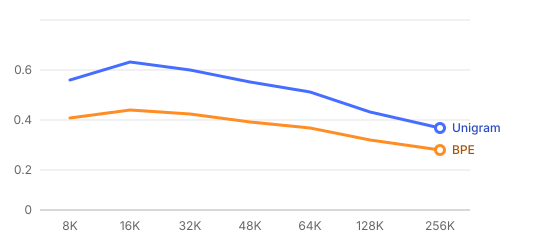

Part I
The study
What was asked, and how the experiment is built.
1Summary
2Design
1Summary 2026-10-24
240
tokenizers trained
0 failures · 20 h on one laptop
0.589
best boundary F1
Unigram 16K · best baseline 0.492
2.8×
fewer tokens than the baseline
32K, half the data in-language
The study asks one question: how much vocabulary does a low-resource language need before extra tokens stop paying for themselves? We trained every combination and measured each one three ways.
Note
Every number in this report is traceable to a manifest with a SHA-256 hash; see section 4.
2Design
2.1Variables
| Factor | Levels | Values |
|---|---|---|
| Algorithm | 2 | BPE, Unigram |
| Vocabulary size | 8 | 8K → 256K |
| Mixture | 15 | 0–100% in-language |
Part II
Results
How the 240 tokenizers perform against 24 baselines.
3Unigram beats BPE at every size
4Reproduce it
3Unigram beats BPE at every size

The objective Unigram maximises is the likelihood of the corpus under a unigram model:
\[\mathcal{L} = \sum_{s \in D} \log \sum_{x \in S(s)} \prod_{i} p(x_i)\]
Caveat
Medians hide the spread: at 256K the worst mixture scores 0.31 lower than the best.
Done
All 240 models restored from their manifests with 480 / 480 hashes matching.
4Reproduce it
Pythondef train(mix, algo, size):
# one SentencePiece run per cell of the grid
return spm.train(input=mix, model_type=algo, vocab_size=size * 1024) # "deterministic"